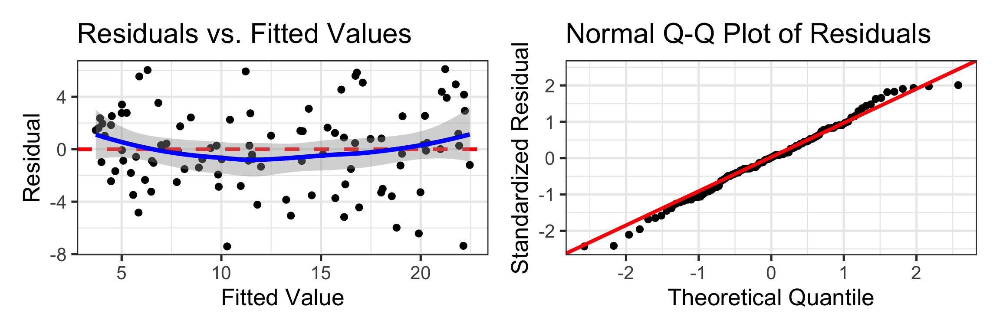
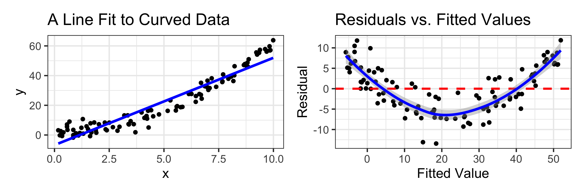
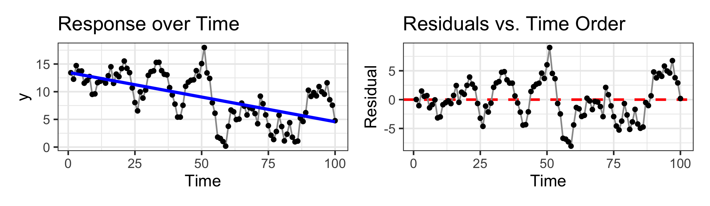
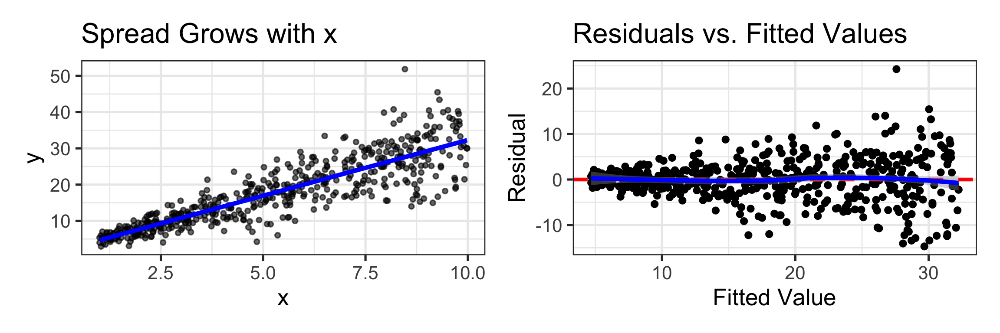
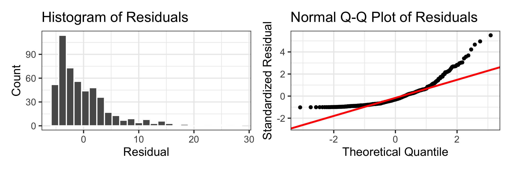
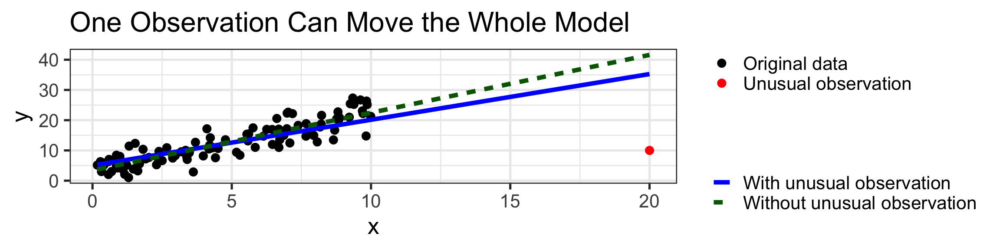

November 24, 2026
What are we assuming when we build a linear regression model?
Two additional concerns for multiple regression
For each: how do we check it, and what goes wrong when it fails?
Note: Last time, every p-value and interval we computed came with the phrase “as long as the assumptions underlying the model construction are approximately satisfied.” Today we find out what that phrase means, and what it costs us when it isn’t true.
File \(\to\) New File \(\to\) Quarto Document... and hitting the button to Create Empty Document.Every model we build is a simplified story about how the data came to be. For linear regression, the story is:
\[y = \beta_0 + \beta_1 x_1 + \cdots + \beta_k x_k + \varepsilon \quad\text{where}\quad \varepsilon_i \overset{\text{iid}}{\sim} N\left(0, \sigma^2\right)\]
Unpacked, the story says that the mean of \(y\) is a linear function of our predictors, and that the errors around that mean are independent, have equal variance, and are normally distributed.
The fitted model is only ever an approximation of this story. The assumptions are what justify the tests and intervals we built last time.
In the statistical learning setting, we are leaning on the story to draw conclusions (hypothesis tests, confidence intervals, interpretations), so violations threaten our conclusions directly.
In the machine learning setting, we judge models by how they perform on validation data, so we care less about the story. Violations still matter though – they are often the reason a model predicts poorly, and our prediction intervals rely on the story too.
We can’t observe the true errors \(\varepsilon_i\), but we can observe their stand-ins – the residuals.
\[e_i = y_i - \hat{y}_i = \left(\text{observed response}\right) - \left(\text{predicted response}\right)\]
If the model’s story is a good description of our data, then the residuals should look like patternless, roughly bell-shaped noise centered at zero.
Nearly all of our assumption checks are really residual checks. We’ll make two plots over and over today:
augment() on the underlying lm engine object gives us the fitted values (.fitted), residuals (.resid), standardized residuals (.std.resid), and some influence measures (.hat, .cooksd) that we’ll use later.
Before we look at violations, let’s get a feel for what a well-behaved model looks like. These data were simulated so that all of the assumptions hold.

What to notice: The residuals form a shapeless cloud, evenly spread around zero, with no curve and no funnel. The Q-Q points hug the red line. This is the benchmark we’ll compare everything else to.
Nothing Is Perfect: Note that even with a dataset constructed to satisfy the assumptions, the assumptions are not perfectly satisfied. The more severe the violation(s), the less reliable/useful the model.
The Assumption: The average response changes linearly with each predictor (holding the others fixed). Mathematically, \(\mathbb{E}\left[y\right]\) is a linear function of the \(\beta\) coefficients and our predictors.
How to Check: Look at the original scatterplot(s) and the Residuals vs. Fitted Values plot. We’re hoping to find no pattern in the “residuals versus fits”.
What a Violation Looks Like: Here, the true relationship is curved, but we fit a straight line.

The residuals are positive, then negative, then positive again – the line is systematically wrong in predictable places. That curve in the residual plot is a signature of a linearity violation.
If the shape of the model is wrong, then everything built on top of it is wrong too. Let’s look at the average residual in different regions of \(x\). If the model were right, these should all be close to zero.
| region | average_residual |
|---|---|
| High x | 1.940245 |
| Low x | 1.802508 |
| Middle x | -6.250072 |
Consequences:
What We Can Do: Transform a variable (e.g. \(\log(x)\)), or add terms that capture the curvature (e.g. \(x^2\)). We’ll spend time on this later in our course!
The Assumption: The errors are independent of one another. Knowing that one observation’s residual was large and positive tells us nothing about the next observation’s residual.
How to Check: Think about how the data were collected! Observations from the same person, the same classroom, or consecutive moments in time are often related to each other. If there is a natural order to the data, plot the residuals in that order.
What a Violation Looks Like: These data were generated to be time-ordered, and each error is strongly related to the one before it. Importantly, there is no true relationship between \(y\) and time here.

The residuals wander in long runs above and below zero instead of bouncing randomly around it. This kind of residual plot is a sign that the errors are dependent.
When observations are related, each one carries less “new” information than an independent observation would. Our formulas don’t know that, so they behave as if we have more information than we do.
Let’s see what that costs us. We’ll repeatedly (5000 times) simulate data where the true slope is zero and count how often a 5% test claims to have found a statistically significant relationship.
| Error Dependence | Proportion of p-values below 0.05 |
|---|---|
| Independent errors | 0.0446 |
| Strongly dependent errors | 0.5128 |
Consequences:
glance() and tidy().What We Can Do: Plan the data collection to avoid dependence, or use models designed for dependent data (time series models, mixed-effects models). Those other models are beyond the scope of this course, but we should recognize when they’re needed.
The Assumption: The errors have the same spread (\(\sigma^2\)) no matter the values of the predictors. We sometimes call this homoscedasticity (and its violation heteroscedasticity).
How to Check: Residuals vs. Fitted Values. We want a band of constant width, not a funnel, fan, bow-tie, etc.
What a Violation Looks Like: Here, observations with larger \(x\) are much more variable.

The classic “fan” or “funnel” shape in the residual plot – narrow on one end and wide on the other – is one signature of unequal variance. Other shapes (a bow-tie, diamond, etc.) also indicate unequal variance.
The model uses a single \(\sigma\) (sigma in glance()) to describe the spread everywhere. When the true spread changes, that one number is right on average but wrong almost everywhere.
Check how often the 95% prediction intervals actually contain the observed responses in different regions of \(x\):
| region | coverage |
|---|---|
| High x | 0.8235294 |
| Low x | 1.0000000 |
| Middle x | 0.9705882 |
Consequences:
What We Can Do: Transform the response (a \(\log(y)\) transformation often calms a fan shape), or use methods designed for unequal variance (weighted least squares, robust standard errors).
The Assumption: The errors follow a normal (bell-shaped) distribution centered at zero.
How to Check: A histogram of the residuals, and especially a Normal Q-Q plot. If the residuals are normal, the Q-Q points fall along the line. Curvature or heavy tails signal non-normality.
What a Violation Looks Like: Here, the errors are strongly right-skewed.

The histogram has a long right tail, and the Q-Q points bend away from the line at both ends.
A systematic bend away from the line at even just one end is sufficient for indicating a violation though.
This is the assumption we can most afford to bend, but not to break. A prediction interval is built to be symmetric around the prediction, which is only appropriate if the errors are symmetric. Let’s see how the tails of those intervals behave:
| Missed Below Interval | Missed Above Interval |
|---|---|
| 0 | 0.058 |
If the intervals were calibrated, we’d miss about 2.5% on each side. Instead, essentially all of the misses happen on one side.
Consequences:
What We Can Do: Transform the response, collect more data, or move to models that fit the response’s distribution better. Also, look for outliers – a handful of extreme points often cause the heavy tails.
The Concern: In multiple regression, two or more predictors may carry nearly the same information (e.g. height in inches and height in centimeters). Each coefficient is interpreted “holding the other predictors fixed” – but what if the other predictors can’t be held fixed?
How to Check: Look at correlations among predictors, and at variance inflation factors (VIFs). A common rule of thumb is that VIFs above about 5 to 10 are cause for concern.
| x1 | x2 | |
|---|---|---|
| x1 | 1.0000000 | 0.9977144 |
| x2 | 0.9977144 | 1.0000000 |
| x | |
|---|---|
| x1 | 219.0131 |
| x2 | 219.0131 |
Here, x1 and x2 are almost perfectly correlated – the true model uses both of them, and the model is useful. Watch what happens to the Global Test and the Term-Based Tests:
| r.squared | adj.r.squared | sigma | statistic | p.value |
|---|---|---|---|---|
| 0.624174 | 0.6038591 | 9.065332 | 30.72491 | 0 |
| term | estimate | std.error | statistic | p.value |
|---|---|---|---|---|
| (Intercept) | 4.776224 | 3.035095 | 1.5736658 | 0.1240779 |
| x1 | -3.297261 | 7.407720 | -0.4451114 | 0.6588325 |
| x2 | 7.166855 | 7.366231 | 0.9729338 | 0.3369043 |
Look familiar? The Global Test for Model Utility says “this model is useful!” but the Term-Based Tests say “none of these terms add anything, given the others.”
Both statements are true! If x1 and x2 carry the same information, then given one of them, the other adds very little new information.
Consequences:
x2 fixed” become hollow, since x2 doesn’t vary independently of x1.What We Can Do: Drop one of the redundant predictors, combine them into a single predictor, or (in the machine learning setting, where we care about predictions more than coefficients) simply be aware of it.
A Subtle Point: This is one more reason we only drop one term at a time during model reduction. Removing a redundant predictor changes the other’s standard error dramatically!
The Concern: A least squares fit tries hard to avoid large residuals, so a single unusual point can pull the entire model toward itself. Points that are far from the rest of the data in \(x\) have the most leverage to do this.
How to Check: Plot the data, and look at the leverage (.hat) and Cook’s distance (.cooksd) of each observation. An observation with an unusually large Cook’s distance is influential.
| x | y | .hat | .cooksd |
|---|---|---|---|
| 20.000000 | 10.00000 | 0.2003309 | 5.7084026 |
| 9.345101 | 27.33708 | 0.0262517 | 0.0529644 |
| 9.620795 | 26.70282 | 0.0283570 | 0.0436498 |

Let’s compare the fitted coefficients with and without that single observation:
| model | term | estimate | std.error | p.value |
|---|---|---|---|---|
| Without unusual observation | (Intercept) | 3.373351 | 0.5671209 | 0 |
| Without unusual observation | x | 1.910618 | 0.0995332 | 0 |
| With unusual observation | (Intercept) | 5.027763 | 0.7279365 | 0 |
| With unusual observation | x | 1.511518 | 0.1211480 | 0 |
Consequences:
What We Can Do: Investigate the observation. Is it a data-entry error? A different kind of subject than the rest? A genuinely interesting finding? We shouldn’t delete observations just because they’re inconvenient – but we should know when they are driving our results, and be transparent about it (for instance, by reporting the model with and without them).
| Assumption | How We Check | If It's Violated | What We Can Try |
|---|---|---|---|
| Linearity | Scatterplots; residuals vs. fitted values | Systematically wrong predictions; misleading coefficients | Transform variables; add curvature terms |
| Independence | Study design; residuals vs. order | Standard errors too small, so p-values too small and intervals too narrow | Better data collection; models specifically designed for dependent data |
| Equal Variance | Residuals vs. fitted values (look for a fan, bow-tie, etc.) | Prediction intervals too wide in some places and too narrow in others | Transform the response; weighted least squares |
| Normality | Q-Q plot; histogram of residuals | Miscalibrated prediction intervals; shaky small-sample inference | Transform the response; more data |
| No Multicollinearity | Correlations; VIFs | Inflated standard errors; unstable coefficients | Drop or combine redundant predictors |
| No Influential Points | Leverage; Cook's distance | A few points can drive the whole fit | Investigate; report models with and without high leverage observations |
Return to the model you reduced during our last class. In your Quarto document, try the following:
augment() on the underlying lm engine object to find the observation with the largest Cook’s distance. Is it much larger than the others?A Reminder: We assess assumptions after fitting the model and before trusting its tests, intervals, and interpretations. When an assumption fails, our first move is to ask why – not to abandon the model.
Every test and interval we computed last time was built on the story that the errors are independent, equally variable, and normal around a linear mean.
Because none of these assumptions is ever perfectly true, we’re not looking for perfection. We’re looking for evidence of serious violations, and for an understanding of what each violation would cost us.
In the statistical learning setting, violations threaten our conclusions – p-values, intervals, and interpretations. In the machine learning setting, they often show up as poor validation performance and unreliable prediction intervals.
Residual plots are our best friend. When something looks off, they tell us where to look next.
Simple Linear Regression